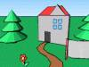

L'interview de Statix par Chandra
(traduction (approximative) par Chandra, merci à Statix et à Bbg)
OJ> Salut Statix !
S> Salut Chandra... et les lecteurs d'Orange Juice.
OJ> Peux-tu te
présenter s'il te plait...
 S> J'ai 19 ans, j'étudie les maths à
l'université de Cambridge en Angleterre, j'ai des
cheveux rouges, lumineux et désordonnés (comme les
vieux de la Wired 96 le savent bien) et je mesure 1,83 m.
Je joue aussi beaucoup de musique classique et du
violoncelle...
S> J'ai 19 ans, j'étudie les maths à
l'université de Cambridge en Angleterre, j'ai des
cheveux rouges, lumineux et désordonnés (comme les
vieux de la Wired 96 le savent bien) et je mesure 1,83 m.
Je joue aussi beaucoup de musique classique et du
violoncelle...
OJ> Comment
as-tu commencé à coder ?
S> J'ai récupéré une copie du Turbo Pascal
4 à un vieux (45 ans, j'en avais 12 ;) qui habitait dans
ma rue... au fur et à mesure j'ai utilisé de plus en
plus l'assembleur pour finir par tout écrire en TASM.
OJ> Comment
as-tu connu la scene ? Quand as-tu commencé à coder des
démos ?
S> J'ai toujours été emballé par la
musique, j'écoutais des modules bien avant de connaitre
la demoscene. Donc j'ai commencé à coder des trackers
car je n'avais pas de modem et j'avais besoin de quelque
chose pour composer ces choses. C'est alors qu'un ami m'a
montré Panic et 2nd Reality et le reste, comme on dit, ca
fait partie de l'histoire.
OJ> Es-tu dans
Psychic Links depuis sa création ? Psychic Links ne
produit plus rien maintenant il me semble.
S> [nb - c'est psychic link :) les français
rajoutent toujours un "s", je pense que je
regrette de ne pas l'avoir mit au départ !] Yop, un ami
à l'école a eu l'idée du nom et un autre nous a
rejoint en tant que coder. Notre première démo, Act1, n'est pas très connue et n'est
d'ailleurs pas fameuse (mais ca m'a donné un boulot...)
et c'est seulement Juice pendant l'été 95 (nb: 2ème à
l'asm 95) qui nous a fait connaitre... S-Cubed
(l'autre coder) travaille maintenant pour de petites
boites de jeux, et Skywalker (le musicien) est devenu
DJ... je suis donc le seul à rester. Je release sous les
labels PL, Acme et Imphobia maintenant...
OJ> Quel a
été ton premier ordinateur ?
S> Un Spectrum ! Hourra ! Mais ma vie de
programmeur a réellement débuté avec un Amstrad PC
1512, et je suis resté avec mon cher 386 jusqu'à
l'Assembly 95. Puis j'ai eu un P90, que j'ai toujours. Il
me faut vraiment quelque chose de plus puissant...
OJ> On a
beaucoup entendu parlé de toi récemment (Paper, 303,
Wired Intro 2). Apparemment ton style représente bien
les goûts de la scene. Qu'en penses-tu et comment
vois-tu l'avenir de la demoscene ?
S> Je n'ai jamais entendu ca auparavant !
Mais je me sens encore nouveau sur la scene et je n'ai
accès au net que depuis un an... Je pense que mon style
se tient, il correspond à ce que j'ai dans la tête, et
je pense que je m'améliore. Je crois que la scene vit
trop repliée sur elle-même, qu'elle se regarde trop le
nombril et par conséquent qu'elle se prend trop au
serieux... Il existe un tas de démos avec un
"design" pourrave, presque aussi nulles que
tous ces vectors show d'il y a un ou deux ans. Ce n'est
pas pour dire qu'il n'existe pas de belles productions et
quelques magnifiques effets mais en tout cas la plupart
des démos que j'ai récemment downloadées étaient
toutes aussi décevantes les unes que les autres. La
scene semble avoir des hauts et des bas en créativité
(sauf pour quelques sceners d'exeption que je vénère
:-) et ne nommerai pas ici) et en ce moment nous sommes
en bas, mais en train de remonter.
OJ> Penses-tu
qu'il y ai trop de cp ? Environ 60 par an...
S> Je pense qu'il ne peut y avoir trop de
parties ! Sans parties la scene meurt et devient un sport
très solitaire. Les parties ce ne sont pas juste des
compétitions, elles permettent aux sceners de se
rencontrer et de passer un bon moment ensemble.

S> Ca a beaucoup changé. J'ai l'habitude de
coder entièrement en assembleur. Mon tracker et mon
player sont écrit en 100% asm, compilation sous
Microsoft Assembler (c'est mieux), et Paper a été écrite entièrement ainsi...
Pour des trucs plus gros j'utilise un mélange de Watcom
C et d'assembleur... Mais j'aimerai bien pouvoir utiliser
Microsoft Visual C++ 5, qui est vraiment cool ! (malgré
tous ses bugs...). J'utilise aussi le Pascal parfois pour
faire des outils vite fait... Et n'oublions pas le Indoor
Music System de Pascal que j'ai utilisé la première
fois pour l'invitation de la Wired et qui est vraiment
bien. Pascal est un fameux coder.
OJ> De quelle
façon travailles-tu ? Au coup de bourre ou
progressivement ?
S> Coup de bourre. Je pense beaucoup aux
démos mais je ne fait rien. Je m'imagine à quoi ca doit
ressembler, ce que je veux exactement. Ensuite je passe
une semaine entière à coder toutes les nuits après mes
cours... Puis plus rien... Pour 303 j'ai bossé de façon très progressive
sur les routines mpeg et son et puis j'ai du me mettre à
bosser comme un malade quand je suis arrivé avec Vic à
la coding. Je ne veux plus jamais recommencer ça ! Je
n'ai jamais autant bossé depuis longtemps (3 bons jours,
24h/24). Le resultat fut malheureusement plutôt
grossier, mais j'espère bien faire une démo avec Vic
qui serai ce que 303 aurai du être....
Pour 303 j'ai bossé de façon très progressive
sur les routines mpeg et son et puis j'ai du me mettre à
bosser comme un malade quand je suis arrivé avec Vic à
la coding. Je ne veux plus jamais recommencer ça ! Je
n'ai jamais autant bossé depuis longtemps (3 bons jours,
24h/24). Le resultat fut malheureusement plutôt
grossier, mais j'espère bien faire une démo avec Vic
qui serai ce que 303 aurai du être....
OJ> Qu'est ce
qui n'allait pas dans 303 ?
S> Et bien il y a trop de baclage dans la version
finale, particulièrement des merdes avec les palettes et
plein d'effets que j'aurai voulu essayer mais que je n'ai
pas pu y mettre. 303 n'a pas donné ce que
j'escomptais... Ce sera pour la prochaine fois...
J'espère pouvoir passer plus de temps à fignoler :)
OJ> Que
pensent tes amis de tes activités de scener ?
S> Mes parents en sont vraiment content, mais
ils n'y comprennent rien :-) Ma copine déteste tout ce
qui a rapport avec la scene et se contente de sourire en
coin quand je parle de démos... Et tous mes amis à
l'université pensent la première fois que c'est amusant
puis n'y pensent plus. C'est pareil pour tout le monde
n'est ce pas...
OJ> Aimerai-tu
bosser chez Microsoft ?
S> Non, pas assez de liberté. Tout
simplement.
OJ>
Qu'aimes-tu comme musique ?
S> Oula, difficile a dire comme ça ! La
musique classique d'abord: tout ce qui est russe,
particulierement Shostakovitch et les instruments à
cordes. Sinon voici les albums que j'ai écouté
récemment: portishead/portishead, sneaker pimps, lamb
(superbe !), dubstar (les deux albums), prodigy (hmm...
j'aime moins maintenant...), olive (superbe !). Diable,
je parle trop :-)
OJ> Merci
Statix, un dernier mot ?
S> Merci pour l'interview. J'espère que
pleins de gens vont arriver sur scene pour y apporter de
l'air frais. Parfois je me dit qu'elle fait un peu vieux
jeu... Que diable, éclatez vous !
S> Geuhh, ca sonne faux. Quoi je suis fatigué ? Ok... La merde vient des gens fatigués. Contentez vous de vous amuser.
S> Ok, on est une nuit plus tard et je suis en meilleure forme... mais je pense toujours la même chose :) parfois la scene est trop égoïste (moi y compris) alors amusez vous quoi ! Les Finlandais l'ont bien montré à l'asm 95... Chui mauvais, je n'y suis pas allé depuis si longtemp !
Statix est un coder anglais.
son
e-mail:
ajbe2@????
<< ... j'ai des cheveux rouges, lumineux et
désordonnés ... >>
<< ... La scene semble avoir des hauts et des bas
en créativité ... >>
<< ... j'aimerai bien pouvoir utiliser Visual C++
5, qui est vraiment cool ... >>
<< ... parfois la scene est trop égoïste (moi y
compris) ... >>